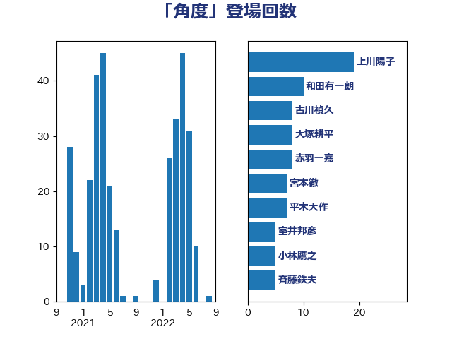

単語「角度」

| 上川陽子 | 自由民主党 | 19 回 |
| 和田有一朗 | 日本維新の会 | 10 回 |
| 古川禎久 | 自由民主党 | 8 回 |
| 大塚耕平 | 国民民主党 | 8 回 |
| 赤羽一嘉 | 公明党 | 8 回 |
| 宮本徹 | 日本共産党 | 7 回 |
| 平木大作 | 公明党 | 7 回 |
| 室井邦彦 | 日本維新の会 | 5 回 |
| 小林鷹之 | 自由民主党 | 5 回 |
| 斉藤鉄夫 | 公明党 | 5 回 |
| 末松信介 | 自由民主党 | 5 回 |
| 沢田良 | 日本維新の会 | 5 回 |
| 穀田恵二 | 日本共産党 | 5 回 |
| 野田聖子 | 自由民主党 | 5 回 |
| 伊佐進一 | 公明党 | 4 回 |
| 浜田聡 | NHK党 | 4 回 |
| 紙智子 | 日本共産党 | 4 回 |
| 菅義偉 | 自由民主党 | 4 回 |
| 伊藤岳 | 日本共産党 | 3 回 |
| 岸信夫 | 自由民主党 | 3 回 |
| 杉久武 | 公明党 | 3 回 |
| 稲富修二 | 立憲民主党 | 3 回 |
| 芳賀道也 | 国民民主党 | 3 回 |
| 中川正春 | 立憲民主党 | 2 回 |
| 城井崇 | 立憲民主党 | 2 回 |
| 寺田学 | 立憲民主党 | 2 回 |
| 小沼巧 | 立憲民主党 | 2 回 |
| 山添拓 | 日本共産党 | 2 回 |
| 志位和夫 | 日本共産党 | 2 回 |
| 杉尾秀哉 | 立憲民主党 | 2 回 |
| 杉田水脈 | 自由民主党 | 2 回 |
| 東国幹 | 自由民主党 | 2 回 |
| 梅村みずほ | 日本維新の会 | 2 回 |
| 櫻井周 | 立憲民主党 | 2 回 |
| 浅田均 | 日本維新の会 | 2 回 |
| 牧山ひろえ | 立憲民主党 | 2 回 |
| 田村まみ | 国民民主党 | 2 回 |
| 美延映夫 | 日本維新の会 | 2 回 |
| 西村康稔 | 自由民主党 | 2 回 |
| 道下大樹 | 立憲民主党 | 2 回 |
| 遠藤敬 | 日本維新の会 | 2 回 |
| 音喜多駿 | 日本維新の会 | 2 回 |
| 高木かおり | 日本維新の会 | 2 回 |
| 高橋千鶴子 | 日本共産党 | 2 回 |
| 三原じゅん子 | 自由民主党 | 1 回 |
| 上野通子 | 自由民主党 | 1 回 |
| 中川宏昌 | 公明党 | 1 回 |
| 中野洋昌 | 公明党 | 1 回 |
| 伊藤孝恵 | 国民民主党 | 1 回 |
| 伊藤孝江 | 公明党 | 1 回 |
| 伴野豊 | 立憲民主党 | 1 回 |
| 佐々木さやか | 公明党 | 1 回 |
| 加藤勝信 | 自由民主党 | 1 回 |
| 吉田とも代 | 日本維新の会 | 1 回 |
| 吉田宣弘 | 公明党 | 1 回 |
| 吉田統彦 | 立憲民主党 | 1 回 |
| 国定勇人 | 自由民主党 | 1 回 |
| 國重徹 | 公明党 | 1 回 |
| 堀井巌 | 自由民主党 | 1 回 |
| 堀場幸子 | 日本維新の会 | 1 回 |
| 塩村あやか | 立憲民主党 | 1 回 |
| 大島敦 | 立憲民主党 | 1 回 |
| 奥下剛光 | 日本維新の会 | 1 回 |
| 奥野総一郎 | 立憲民主党 | 1 回 |
| 宮路拓馬 | 自由民主党 | 1 回 |
| 小宮山泰子 | 立憲民主党 | 1 回 |
| 小沢雅仁 | 立憲民主党 | 1 回 |
| 山下貴司 | 自由民主党 | 1 回 |
| 山本剛正 | 日本維新の会 | 1 回 |
| 山田勝彦 | 立憲民主党 | 1 回 |
| 岡本三成 | 公明党 | 1 回 |
| 岡田克也 | 立憲民主党 | 1 回 |
| 平井卓也 | 自由民主党 | 1 回 |
| 平山佐知子 | 無所属 | 1 回 |
| 平沢勝栄 | 自由民主党 | 1 回 |
| 徳永久志 | 立憲民主党 | 1 回 |
| 新垣邦男 | 立憲民主党 | 1 回 |
| 末次精一 | 立憲民主党 | 1 回 |
| 本村伸子 | 日本共産党 | 1 回 |
| 林芳正 | 自由民主党 | 1 回 |
| 枝野幸男 | 立憲民主党 | 1 回 |
| 柳ヶ瀬裕文 | 日本維新の会 | 1 回 |
| 柿沢未途 | 無所属 | 1 回 |
| 梶山弘志 | 自由民主党 | 1 回 |
| 森屋隆 | 立憲民主党 | 1 回 |
| 武田良太 | 自由民主党 | 1 回 |
| 江田憲司 | 立憲民主党 | 1 回 |
| 池田佳隆 | 自由民主党 | 1 回 |
| 河西宏一 | 公明党 | 1 回 |
| 渡辺周 | 立憲民主党 | 1 回 |
| 牧義夫 | 立憲民主党 | 1 回 |
| 田中健 | 国民民主党 | 1 回 |
| 田村憲久 | 自由民主党 | 1 回 |
| 田村智子 | 日本共産党 | 1 回 |
| 田村貴昭 | 日本共産党 | 1 回 |
| 白石洋一 | 立憲民主党 | 1 回 |
| 石井章 | 日本維新の会 | 1 回 |
| 石橋通宏 | 立憲民主党 | 1 回 |
| 磯崎仁彦 | 自由民主党 | 1 回 |
| 神谷裕 | 立憲民主党 | 1 回 |
| 福島みずほ | 社会民主党 | 1 回 |
| 福島伸享 | 無所属 | 1 回 |
| 笠浩史 | 無所属 | 1 回 |
| 緑川貴士 | 立憲民主党 | 1 回 |
| 舩後靖彦 | れいわ新選組 | 1 回 |
| 若松謙維 | 公明党 | 1 回 |
| 茂木敏充 | 自由民主党 | 1 回 |
| 萩生田光一 | 自由民主党 | 1 回 |
| 落合貴之 | 立憲民主党 | 1 回 |
| 蓮舫 | 立憲民主党 | 1 回 |
| 藤岡隆雄 | 立憲民主党 | 1 回 |
| 藤巻健太 | 日本維新の会 | 1 回 |
| 西田実仁 | 公明党 | 1 回 |
| 谷公一 | 自由民主党 | 1 回 |
| 豊田俊郎 | 自由民主党 | 1 回 |
| 赤嶺政賢 | 日本共産党 | 1 回 |
| 足立康史 | 日本維新の会 | 1 回 |
| 近藤昭一 | 立憲民主党 | 1 回 |
| 重徳和彦 | 立憲民主党 | 1 回 |
| 金城泰邦 | 公明党 | 1 回 |
| 金子恵美 | 立憲民主党 | 1 回 |
| 金村龍那 | 日本維新の会 | 1 回 |
| 鈴木俊一 | 自由民主党 | 1 回 |
| 鈴木宗男 | 日本維新の会 | 1 回 |
| 鈴木庸介 | 立憲民主党 | 1 回 |
| 長浜博行 | 無所属 | 1 回 |
| 青木愛 | 立憲民主党 | 1 回 |
| 須藤元気 | 無所属 | 1 回 |
| 麻生太郎 | 自由民主党 | 1 回 |